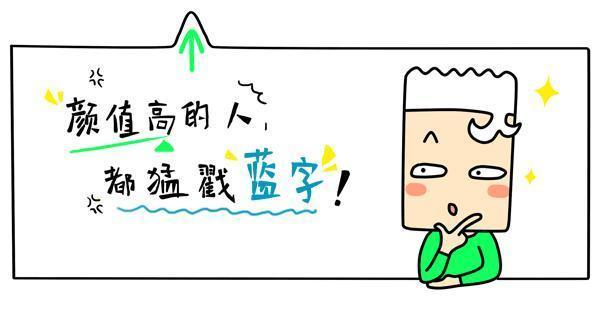
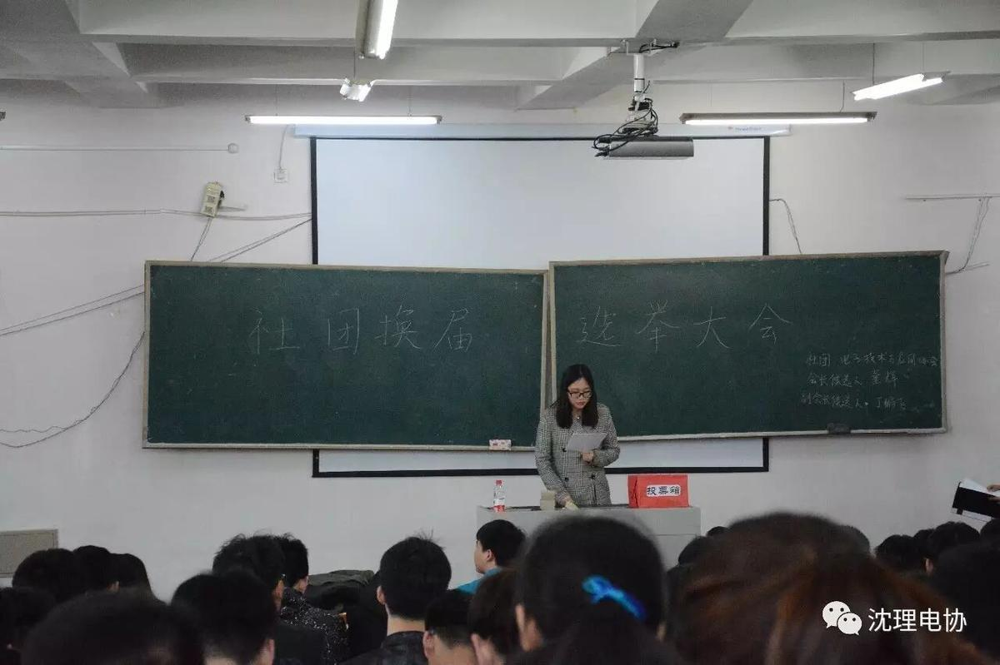
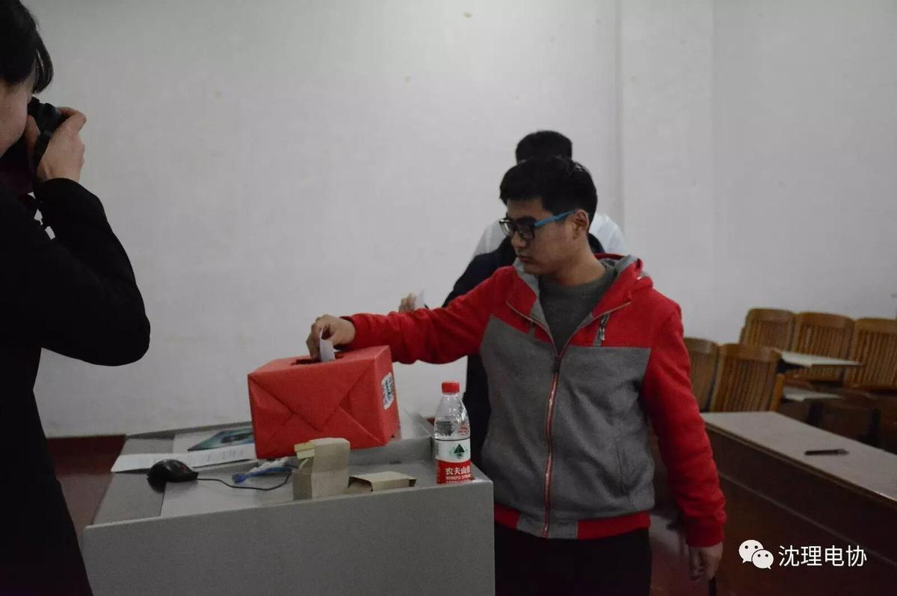
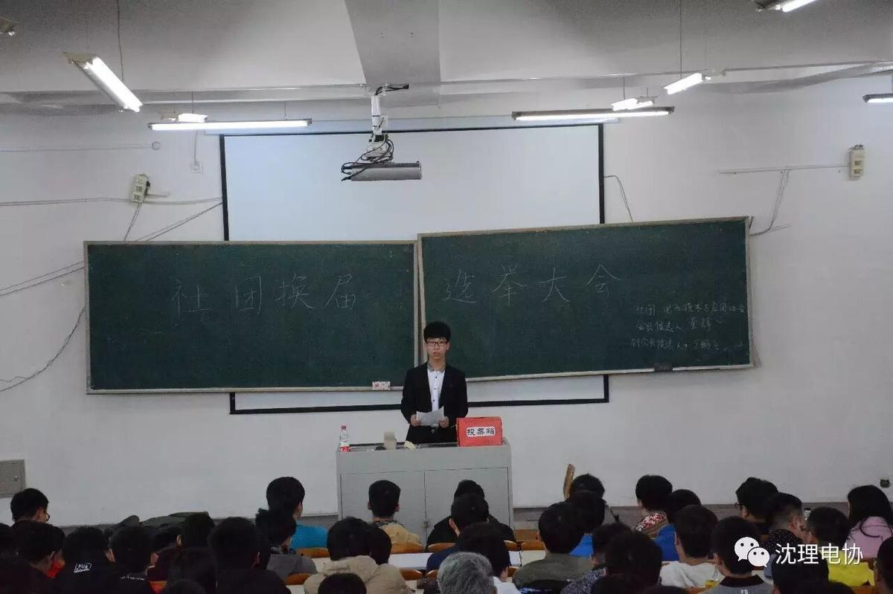
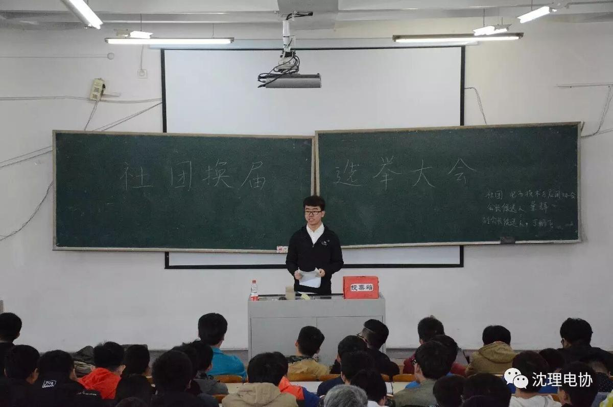
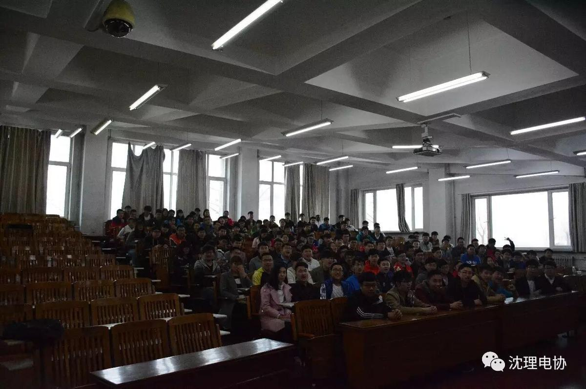

电子技术与应用协会圆满换届



3月19日，电子技术与应用协会在综合楼A119进行换届选举。


会议采取投票方式

经过激烈竞选，大二干事董辉，丁鹏飞当选电子协会新任会长，副会长。

（会长：董辉）


（副会长：丁鹏飞）


感谢全体电协成员的努力，相信本次换届之后，电子协会能在新的领头羊带领下办出更多精彩活动，将电子协会带到广大师生身边，相信电协的明天也会更加炫目！

文/信息部